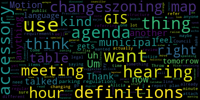
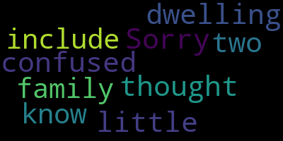

[Collins]: All right, I believe Councilor Callaghan will be on with us in just a couple of minutes when she's able to get online. Since we have a quorum present, I'm going to call the meeting to order. There will be a meeting of the Planning and Permitting Committee, May 22nd, 2024. This meeting will take place at 6pm via Zoom only. To submit written comments, please email ahertabse at medfordma.gov. Mr. Kirk, please call the roll. Mr. Clark, I can't hear you.
[SPEAKER_03]: Oh, no, I can. Okay. President Collins. Present. Councilor Leming. Present. President Bears. Present. Councilor Callahan. All right, for president, I do not see I do not see counts account online.
[Collins]: Thank you, I believe that she'll be joining online just a few minutes late. For present one absent, the meeting is called to order. The action and discussion item for tonight is again paper 24-033, zoning ordinance updates with the Innes Associates team. We've been meeting with the Innes Associates team together with other key stakeholders and supporters in the zoning overhaul process very frequently in this committee over the past few months. Our last meeting of the Planning and Permitting Committee was also on this topic. I'll just briefly recap what we talked about in that meeting, talk about our specific goals for this meeting, which we talked about on the 8th. We have some items to report out and then hopefully at the end of the meeting, we can briefly tee up what else we plan to do in June to accomplish with this team by the end of the fiscal year. And I'm hoping that we can, since we had such a robust discussion on May 8th, I'm hoping that we can get everybody out of here by pretty close to 7, if not before 7.30. I know there is another committee meeting after this one tonight. On the 8th, we had a long and robust discussion about some of the definitions in the current code of ordinances that are to be updated. And that informs that kind of piggybacks and other conversations that we've had with this team about necessary updates to the table of uses and to site plan review, changes to the zoning ordinances that will make administrative work on the city side more streamlined before we get into the work of substantively changing the zoning. So building off of those conversations tonight, I'm hoping that we can touch on the following topics. Going over the general plan for the review of Medford zoning ordinance. Reviewing the recommended updates to the definitions and use table. Reviewing the site plan review options. Discussing our plan for reviewing the climate action and adaptation plan. and then we'll touch on our plan for the schedule for meetings in June and what zoning update topics we will review when in June and further out. Just checking my notes to make sure I didn't leave anything off of that list. overall the goal for tonight is to review recommendations for table of uses, definitions and use table, site plan review options, and make sure that we can report those out to local city council so that they can be referred to the CBP so that we can get those changes moving along efficiently by the end of the year. With that I want to, if there's no If there's no preliminary comments by my fellow councilors or by city staff, I'm happy to kick it over to Paola to introduce what is on tonight.
[Bears]: Throw in, I think the GIS zoning map as well.
[Collins]: Okay, great. I wasn't sure we landed on that. Thank you. So the other item to review tonight and make sure it gets reported out is the GIS zoning map. And Mr. Clerk, I see that Councilor Callahan is present. All right, unless Director Hunt or other city staff have anything to add, Paola, please feel free to go ahead.
[Ramos-Martinez]: Hi, good afternoon. My name is Paola. I'm an urban designer and urban planner at Innes Associates, and I am more than happy to be here with you tonight. With me is my colleague, Jimmy Rocha, and the another consultant that we're working with, which is the attorney Jonathan Silverstein, which he will be presenting today, the Municipal Site Plan Review. I'm having, there is a bit of traffic in the background, so if there is some problems, just let me know that you didn't hear me very well, and so I can repeat. Don't bother, just interrupt, that's totally fine. I'm going to share my screen, if somebody can enable my screen sharing.
[Collins]: I think it might probably cost.
[SPEAKER_09]: Perfect.
[Ramos-Martinez]: I hope you will see my screen. Is that OK? So where we are is May 22. And in this process, the agenda for today, as Vice President Collins said, is to review and vote for the following out topics and those will be the updated table of uses, the existing zoning map in digital, the GIS format, discussed definitions to be sent to the city council and then the municipal site plan review and then we will see in the next round at the end to talk about the next topics. As we talked in the previous meeting We are showing this table of uses where we replace the necessity to go to different tables to check the parking code and loading code and implement it in the same table of uses and parking regulations. So you can see them in this table in yellow color with the letters PC for parking code and LC for loading code. You also can see in a different color in the uses. And those are the definitions that we are changing. It is very likely that this is only for you to see, but this color out and in the table of uses that we will send, you won't be able to see this. Okay, sorry. I don't know why. It's in the other. OK. Well, then I'm going to, is this OK if I do it like this? Because I don't know why it's not showing. I think that's fine if that works for you. OK, sorry. So I'm going to go with the definitions in the table of uses. Is this OK? We already checked it in the previous one and explained it. But if you want to add anything, to hear about it.
[Collins]: Thank you, Paula. I'll just jump in to paraphrase and summarize from our conversation about this on May 8th. The recommended change to this table of uses is that we're switching from... Can you just spell it out for folks who might not have been at our previous committee meeting, the flag changes in gold?
[Ramos-Martinez]: Yeah, so in gold, we have these parking code and loading code tables that in the current zoning are in separate tables. And what we are doing is unifying those. So in one table, you can see it all. So in this gold background, you see the PC that is the parking code, and the LC that is the loading code.
[Collins]: this is to make sure that the relevant information is all on the same page for when city staff or developers are looking for this information. Thank you. Are there any other questions on this slide from councillors or city staff members of the public? Director Hunt, go ahead.
[Hunt]: So one of the things that I realized as we were looking at this is that we have written into the text some exceptions to the detached signal or to the around the housing parking codes. And it doesn't seem, I was looking in my tables, basically we need a footnote and the footnote needs to point to the parking codes. the exceptions. And the current ones just refer you to this table. And the table is back in the middle of the zoning. And so we also need to just add a footnote that I was trying to come up with the net says like affordable housing, right. So the development of affordable housing units are eligible that are eligible for inclusion on the subsidized housing inventory is actually 0.5 per dwelling unit. And then housing located within a half mile of high frequency transit is 0.8 per dwelling unit. And we can satisfy that by just putting it as like an asterisk and a footnote on the page. And again, this is not a change from anything that's required. It's just making it visible on this table. And if necessary, it could reference section 613, which is the table of parking requirements. Right now what happens is that the table of use is at the end of the zoning. This table that we're referencing is in section 613. And so we would need to, and then these two basically footnotes are over there by 613. And so they would need to be somehow represented here. Is that clear? That's perfectly clear. Yes. Thank you for that. And I think that again, this is a formatting change. Um, but I just, I wanted to call it out and I think it needs to be on the version that gets sent to the council for referral and voting.
[Ramos-Martinez]: Yeah, absolutely.
[Collins]: Thank you. Okay, great. So let's make sure that, um, a footnote to this effect is incorporated in whatever version is reported out tonight. You can make all motions at the end.
[Hunt]: Okay, and there's right, there's also one non residential uses with 5000 square feet or less of gross leaseable floor area are exempt from any minimum requirements. So we just, I just don't want them to get lost because developers will look at this table and not know that they need to look at the text in the document as well. Thanks.
[Ramos-Martinez]: Yes, absolutely. Yeah. Okay. If there is no other comment in Table of Uses, then I could start with the definitions.
[SPEAKER_09]: Go ahead.
[Ramos-Martinez]: So, in the definitions, the document structure is the same as we saw in the last meeting. We have some terms to be defined or clarified. We have some suggested definition that will be our proposal that contains the source from which the definition has been taken or that forms the base of the definition. Then, in some cases, if it's a term that has to be clarified, we add the current definition. So, it's the one existing in the Metaverse, something in the ordinance document. The standards of use is that sometimes what we want in the definitions is only the definition and not any standard of use that should be in the ordinance document, but not on the definition section. So, sometimes there are some standards of use, and what we want is to get rid of them in the definition part. And then sometimes it can be that there are some under review. In this document, there will be less of those, but it could be that we have some that requires additional research. And so on the previous meeting, the planning permitting committee meeting that was held on the 8th of May, we had some definitions that were some kind of pre-approved, and I just want to go quickly over those. I'm going to read all of them, and then if somebody has any questions or some extra comment that they didn't before, at the end of all these five definitions, feel completely free to say something, to share anything. So we established the doggie daycare. I'm going to read them fast, but if you need anything, intervene, let me know. So doggie daycare, a facility providing care for dogs on a daily basis without overnight accommodation. The facility may include indoor and outdoor areas for the dogs where they will be under supervision. For clarity, this definition does not include animal boarding facilities. the institutional use, the use of land or structures for the non-profit charitable, benevolent, spiritual, instructional or custodial activities of government, education, religious, healthcare, social service, fraternal, sorority or similar organizations. Mixed-use development, development containing a mix of residential uses and non-residential uses, including without limitation commercial, institutional, industrial or other uses. Motor vehicles, class three, class three more vehicle sales. Principal business is one, buying used vehicles for purpose of remodeling, taking apart or rebuilding and selling the same. Or two, buying or selling parts from used vehicles or tires or the assembling of used vehicle parts. So these are the ones that we pre-approved in the previous one. Let me know if you want me to repeat those, if you have any questions or any comments.
[Collins]: Any comments or questions from counsellors on that first set of definitions? Paula, could you just quickly go through the slides again of the definitions that you just showed us? Or even just that title slide. Yeah, that's fine. Doggy daycare, institutional use, mixed use, motor vehicles, and accessory use. These were among the many that we discussed on the 8th, and I think these were the ones where it was most clear. And I think that was the direction to go in. Not seeing any questions from fellow councillors, let's go along to the next set. Thank you.
[Ramos-Martinez]: So then we had some to review and these were maybe when we talked on the meeting on the 8th they were okay but we received some comments from or the building commissioner or our own consultant and so we wanted to clarify and address the changes. And so I'm going, this one I will go one by one because especially this dwelling multiple, it's going to be a bit more discussion. So I will stop in after each of the definitions. So in this one, What we don't want is to, the current definition that we have, it has these standards of use and that will be this classification of class A and class B. And what we wanted to do is to take these two out and only leave the definition. The thing is that it's very difficult to do that without compromising the table of uses and the table of dimension standards, because it's based on this. So, until we don't change the dimension standards, we cannot change or take out from the definition this part. There is something very interesting in the definition that it's currently on the zoning and it says that, I'm going to read it, a building or structure designed for or containing three or more dwelling units or a building or structure designed for or contain one or more dwelling units in addition to a non-residential use. This part of in addition to a non-residential use, it's kind of interfering with the mixed use definition So we wanted to bring this up to really understand if this is interesting to change. So what we propose is a new definition leaving the class A and class B. And whenever we change the mentioned standards and the different tables to not break the zoning at the moment, we can take out from this new definition the standards. So we propose to have the definition as a building with three or more residential dwelling units or two or more buildings on the same lot with more than one residential dwelling unit in each building. This term shall include, but is not limited to, triplex, quadruplex and townhouse structures containing three or more dwelling units. And then leave the class A and class B in the definition. There was brought by, if I remember correctly, Commissioner Callaghan, that if there was an example of having one building in the same lot, one building with two units and another building with only one unit, and according to this, it's not a multiple dwelling, and it is not because that will be a duplex plus an ADU, an accessory dwelling unit. There is also to consider that In the 3A, the definition for multiple dwelling is the mass general law, so it's exactly this one. And even though it's in the 3A has its own definition, it will be interesting to keep the same one for clarity. But I would love to hear your opinion. What we can do is also hold it and address everything later. But there is a bit of a conflict with mix used in this definition, the current definition.
[Collins]: I think personally, I think that if our goal is to report all of these out tonight, we should deal with the thorns as we encounter them. Questions or comments or suggestions from counsellors on the need for reconciliation that Paola just mentioned?
[SPEAKER_09]: Councilor Callahan.
[SPEAKER_07]: I'm fine with the suggestion that we go with the suggestion definition until we're ready to also change the height standards.
[SPEAKER_09]: Perfect.
[Collins]: I would say that for myself as well. My priority is making sure that we don't, I think the phrase we were using last time is we don't want to break the zoning by implementing new terms before the rest of the zoning code is ready for them. I like the approach of making new terms available and then implementing them when we're ready. So Paola, if it's the professional opinion of Innes Associates that this is the definition that accomplishes that, then I think that's how we should go forward.
[Ramos-Martinez]: Okay, perfect.
[Collins]: Any other comments from councillors or city staff on this one? No? Great. Let's go forward.
[Ramos-Martinez]: Okay. We also looked into all the definitions that has this family definition attached and to change it. So in the dwelling unit, we just want to leave it as it is, but just change the word family that you see there. with the line in the middle, and for household, that you have a very easy definition of household, so it could fit perfectly. So the dwelling unit means a room or group of rooms forming a habitable unit for one household with facilities used or intended to be used for living, sleeping, cooking, sanitation, and eating. Then we have dwelling single family attached, dwelling single family detached and dwelling two family. Our proposal is to change all of them to dwelling one unit attached or detached and dwelling two units. The dwelling one unit attached can also be named row house, or we can also introduce the name also known as row house. So that is made a bit easier for everyone, because it's more the traditional kind of name. And the same we can do with duality units and color, as well, duplex. Yes, Alicia?
[SPEAKER_09]: I recognize Alicia.
[Hunt]: I just wanted to comment that I really like from our purposes, the idea of saying dwelling one unit attached, also known as row house, and then the other also known as duplex, because that is something that has come up for people a lot. Why is it called that? What are one units that are attached to each other? It doesn't make any sense to us. But if you put also known as row house, it's blindingly obvious to everybody what's going on here. And I think the same for the duplex.
[Ramos-Martinez]: So what we could do is also have a diagram with it, because mainly the attach or detach is about the party line. So the sidelines that you share with the abutting lot, and so if you are attached to that, if you share that wall, in both sides you're attached, if you don't, you're detached. But I think that's maybe too technical, so too complemented with the row house or the duplex, it's maybe easier. There is also one typo, at least I guess in the zoning that I have, is the zoning that there is in the dwelling 2 family that is instead of, or it says 2, so it says a detached residential building intended and designed to contain 2, containing 2 dwelling units, that should be to contain or containing 2 dwelling units. So it's just a typo. If we wanted to pass it now, it's easy fixable. And then the only thing that I realized is that, and maybe it's because you don't have this typology, you don't have a semi-detached. And that is when you share only one wall with the neighbor. This is a typology that it's in Somerville, for example. So you have detached, you're not attached to anyone. Attached is that you're attached by the two side, lot sides, and semi, it's only that you share one. So it's something if we, and this is maybe for later, but if it's something that it's a building typology that you have at the moment, it's not represented. So maybe it's in duplex, but it's not exactly the same. So just so you know, I'm not changing anything now, but just to clarify, that maybe there is a typology that you have and it's not represented here.
[SPEAKER_09]: Councilor Callahan, go ahead.
[Burke]: Sorry, I'm a little confused. I thought that dwelling two family would include that.
[Ramos-Martinez]: So at the moment, no, because the two dwelling is The two dwelling is in one lot and it's a detach. So it has no wall on a party line. So the party line is the line that you share with the neighbor, with the neighboring lot. So if you are attached to there, to that side, you will have a semi-detached. The duplex is just, it's in one lot. It's not sharing. And it has setbacks on the sides, so it's detached from any other structure around it. And it can be that it's a dwelling unit, so you have two units in one lot. That means that you have a single house and a single house. And it can be one next to the other or one above the other. But you always have it in one lot and you don't share any lot lines. And that is what a duplex is.
[dcCBbf5sPdI_SPEAKER_04]: So the other one. That part I understood. Maybe I'm not understanding the other one. It's two different lots, but they share one wall? Yes. OK.
[Burke]: I don't know if we have that.
[Ramos-Martinez]: In some places, they don't have it. And so it's only duplex. In Somerville, they have. So I don't know if maybe because it's the same zone area, maybe they share. You share also these things. And they do have this. It looks like a duplex, but mainly is that you have one dwelling unit in one plot and one dwelling unit in the other. But it's something that we can...
[Bears]: The wall is also the lot line, is what you're saying?
[Ramos-Martinez]: Exactly, yeah.
[Bears]: All right.
[Ramos-Martinez]: The wall is exactly on the lot line that is shared from both.
[Collins]: I'll recognize Pointer Evans.
[Evans]: Thank you. Yeah, I think this is when definite illustrations would help. Yeah, I don't know if we have this type in Medford, but yeah, there's definitely in Somerville and Arlington where it's basically As Paolo was saying, it's on the lot line, so you have basically, it looks like a townhouse. The lot line's through the middle, so it's not like a condo situation. Nobody's sharing yards, like the lot lines. You get a rectangle with your townhouse and the other one has theirs. I don't know if we have any of those, but I feel like that'd be a great way to do infill as well. Squeeze things in on small lots. You don't need setbacks.
[Ramos-Martinez]: Yeah, it will make it a bit more dense in certain areas. You need maybe a little less frontage because you don't need to respect one of the setbacks. But it's something that I just wanted to mention, that I don't see it on these definitions, so maybe we need to see if there is to include it or if it's something that is interesting for the future to have mainly.
[Collins]: Yeah, thank you. I appreciate that. And I think, you know, this process is bringing to the fore certain present or future uses that we don't have definitions for yet. And since we know that this is a use that exists in neighboring communities, but less so in Medford, I think this is one that we should put on the list of things to revisit. in future packages of changes if that seems like an okay cadence to city staff and to your team. Personally, I think that these proposals look good. I also think that, you know, the I think that there's a lot of good reasons to adopt the, you know, dwelling one unit attached aka row house or, you know, the aka duplex that seems useful. So that would be, I would be happy to go forward with those tonight. Any other comments, questions from councillors, city staff on this one?
[SPEAKER_09]: All right, seeing none, I guess we can move on. Thank you.
[Ramos-Martinez]: Then we go into the mobile home and manufacturer home. I think I didn't bring this correctly last time. The idea was to change the definition of mobile home and change it completely into manufacturer home. And so we are let's say, deleting the mobile home and bringing a manufacturer home and factory-built home. And this came after the comments from the building commissioner. And so, manufacturer home is a factory-built structure transportable in one or more sections, which is built on a permanent chassis and is designed for use with or without a permanent foundation when connected to the required utilities. and the factory built home and this mainly is to bring forward the possibility to have pre-fab houses and so that's why we need this we are bringing this definition, which is a standardized units, primarily built inside of a factory, then assembled on site in accordance with local building codes. So this is not about movable, but that it is about being fabricated inside a fabric built inside a factory, and then bring it and build it on site in the Yes, so these are the two that we are bringing, and the mobile home is disappearing. I saw, I think, Alicia Hunt that raised her hand.
[Collins]: I'll recognize Director Hunt.
[Hunt]: I think so, one of the so my understanding to manufacturing home this makes sense right I can see that there are uses. One that has come up in from time to time is somebody has house has a major fire. and then they put a manufactured home in the driveway and they live there while their house is being reconstructed. But it is not something that would necessarily be allowed regularly in any place in Medford at this time. I'm confused by why one would want a definition the next one. And I'm not saying we shouldn't put something in I don't fully understand, but the one after that. Go to the next slide. I don't want to get the word, factory built home. So my understanding is that when that is constructed, it doesn't look any different from any other kind of house. For example, when I got a tour of the new buildings that Tufts was building, the ones that are the new grad housing, I think, on Capon Street in Winthrop, Those were built in factories and transported to the site like pieces, large pieces of them were. And that's sort of a better way of getting more energy efficient buildings, because they can be more Rigorously tested and more rigorously constructed when they're done in the factories. And so I'm unclear why we would ever regulate that from a zoning perspective, because in theory, it looks this houses on your. I don't know if any of you know that better. I'm happy to also ask the building commissioner. I don't object to having more definitions. It's better to have definitions that we don't always use than to not have the definition available as we need it.
[Ramos-Martinez]: To my understanding, to include this one is so that we can regulate it in the sense that it's it's possible to do this and to say it more clear on the zoning that this is a possibility and as you said it's even a lot it can it can bring a lot of being even better built and climate efficiency, better sustainability standards done this way. To my understanding is from the building commissioner is to also be able to permit these type of houses of building and that is very clear that they can do this so that there is no possible doubt. That was my understanding, but we can totally save it. and have a more broad dialogue on it. That's totally possible.
[Hunt]: And I understand that he's, sorry, I just got a message from him that he's joining us in a minute. But I don't actually object to including it. I was just trying to understand if there was something to it that I wasn't understanding, since my understanding is that they do look like every other one.
[Ramos-Martinez]: Yes, I do look as any other. Yes, as I said, maybe he can let us know later better, but my understanding was just to make sure that we include them so that it was clear that these houses could be there somewhere, so that the definition makes it more clear that this was a possibility. Great, yes.
[Collins]: Thank you, Paola. And yeah, I think some definitions are updated or so that it's more clear to people who do work and what uses are encouraged and allowed or permitted. And so that if the building commissioner feels that that's something that would be helped by including this definition for the first time, that sounds good to me. Let's keep it moving.
[Ramos-Martinez]: And then we had this tiny house movable and tiny house stationary. These we already reviewed in the previous one. It's only because the stationary one we added from a comment from our consultant. To make it more the same, we added the second part of, which is this part, that I will read it now out loud. So that's why it's here, otherwise it was mainly pre-approved. So tiny house movable or transportable dwelling unit built on a frame or a chassis with no more than 400 square feet, excluding lofts, protection from bay windows, open decks, porches, or exterior utility and storage compartments intended for residential use on an individual house lot where single family dwellings are allowed or as an accessory dwelling unit. And then for the stationary, a dwelling that is 400 square feet or less in floor area excluding lofts, projection from bay windows, open decks, porches or exterior utility and storage compartments intended for the residential use and individual house lot where single family dwellings are allowed or as an accessory dwelling unit.
[Collins]: So these are- Thank you, Paola, I appreciate that. Having reviewed these two, and I just want to, I think for these, oh, and thank you, Commissioner, we'll get to you in just a sec. I think for arranging these definitions, since we had such a substantial conversation about these in our previous committee meeting, I want to pivot and see if there are questions on these two that we just went over, and maybe even for the definitions. Rounding out this batch, you know, let's gloss over all the headlines. Let's, you know, you or I can read the definitions. And then I think, based on our substantive conversation last time, I think we could be at the point where we can raise red flags where there are. But I think we left this off in a really great place at our last meeting. Commissioner van der Waal, go ahead.
[Scott Vandewalle]: Ah, there, I'm unmuted. The only thing I ask is I see the source of the tiny homes in the ICC. I assume that is the most current ICC reference, because I believe when a new building code comes out this year, it'll be based on the 2021 code and will include definitions of tiny homes in it. I haven't read it, but I just want to see if those two sync up with each other at all.
[Ramos-Martinez]: I will check. Thank you for... I will totally review that. I'm not sure, but thank you.
[Collins]: Thank you, Commissioner. Yeah, we can make sure to check on that before these come before the council and report it to the CBB. Thank you so much, Paola, for introducing these last two. Are there any questions or comments from councillors or city staff before we proceed on to the next terms? Director Hunt.
[Hunt]: Should we just go back and ask the commissioner if the my understanding around factory built was correct and I just wanted to make sure that we weren't missing anything there. that the my understanding with factory built is just that they they look like everything else they just happen to be built in a factory and then assembled on site rather than built on site and was there some reason why we want what was the reasoning for wanting the definition in our definitions because my impression my experience with them is they don't look any different from anything else
[Scott Vandewalle]: They generally don't. They are generally built into a factory to the same standards. The manufacturing state building department has a manufactured home section that authorizes what they call third party inspectors, whose job is to inspect these things constructed at the plant. where they're manufactured. The only challenge is there's a slight terminology issue. It gets confusing. These are typically known as modular homes because the true definition of manufactured home belongs to a mobile home under HUD, although the state calls them manufactured homes. So I wish the state would update their language, but it's not a bad idea to point out a modular home because it is different than a manufactured home under other standards.
[Collins]: Thank you. We'll go to President Bears and then Planner Evans.
[Bears]: Thank you. Just want to note, we do have kind of a time clock here. We have a bunch of other major stuff, and we've been spending a lot of time on things we've talked about already. I wanted to just echo what Vice President Collins suggested. If we could read through all the remaining definitions, if people could raise their flag on all of them, and then we can move on to the other items, that would be a preference of this councillor. Thank you.
[Evans]: Thank you, President Barras. Planner Evans? Yeah, I won't belabor this then. We can carry on. Okay, thank you.
[Bears]: And I would say that we have another Council meeting, another CDB hearing, and another Council hearing once again to belabor anything we want.
[Collins]: Sure, many bites at the apple. All right, Paola, if we could proceed, and then we'll just, I think let's, in the interest of time and our full agenda for this meeting, let's read off, you know, this term will be defined, junkyards, take a beat, and if council or city staff have concerns or questions, we can stay on those. If not, we can proceed. How's that sound?
[Ramos-Martinez]: Yeah, that's perfect. So this one as well, it was pretty much no concerns. We just added the comments from the building commissioner. So junkyard, the use of any area or any lot, whether inside or outside of a building, for the storage, keeping or abandonment of junk, scrap or discarded materials, or the dismantling, demolition or abandonment of automobiles, other vehicles, machinery or parts thereof, including but not limited to. and this is the part that we added, discarded, worn out, or junked plumbing, heating supplies, household appliances, and furniture, discarded or scrapped and junked lumber, old or scrapped copper brass ropes, rags, batteries, paper, trash, rubber, plastic debris, waste, and old ferrous material, discarded motor vehicle parts, or more than two unregistered motor vehicles.
[Collins]: So, those are the questions or comments from counsellors on junkyards. Seeing none, okay.
[Ramos-Martinez]: This one as well, we saw it, it just was a bit of struggling. So I just wanted to make sure that we understood this once. So accessory structure, the current definition, we keep as it is. And the one that we change is that we have on the current zoning only accessory. And what we change is the name accessory use. And what we do is to take out all of the standards of use. And so it will be a use customarily incidental and subordinate to that is something that we add and subordinate to and on the same lot. or adjacent lot under the same ownership. This group of lots was flagged by the building commissioner, so we changed it into or adjacent lot under the same ownership as a conforming principle use. And we stopped there and the rest we just eliminated from the definition.
[Collins]: Great. Thank you, Paola. And I think we had a really, for me, a helpful conversation about this on the 8th, Commissioner Venable.
[Scott Vandewalle]: I'm only asking, are we taking away accessory structure because we do have some dimensional criteria in other parts of zoning for what is a limit of a size for an accessory structure? I just don't want to lose that. I think it's 15 feet tall and so many square foot.
[Bears]: Right now it says accessory. It's just an accessory and accessory structure. And this is just changing accessory to accessory use because it's not changing anything about accessory structure. Okay.
[SPEAKER_09]: Yes, a good flag.
[Collins]: Thank you. Any questions or flags other than that one on accessory use? Let's proceed.
[Ramos-Martinez]: Yes. So now are the new definitions that we didn't bring last time because they were under review, and that is the eating establishment, cafe, coffee shop, and the yard and setbacks. The eating establishment mainly was asked in order to have a new definition that was not so broad, that would be able to facilitate the use of small-scale café. This was the idea. So, we bring the definition of neighborhood café. And this means an establishment that serves a limited menu of food items and does not contain more than 2,000 square feet of gross floor area. This comes from the House Bill 2252, State of Washington, blah, blah, blah. Sorry. And there was a concern about the square footage and if certain cafes in the area of Medford would be able to be part of it. We measure those cafes, I don't remember the names at the moment, but I measure more or less the square footage and it was under 2000. And also because I don't want to If it's a neighbourhood cafe, it should be a scale that is manageable and that is small. So I think the 2000 is perfect for this. Otherwise it will be an eating establishment. And so in order to be able to be here, it has to be under the 2000 square feet.
[Collins]: Great. Thank you for introducing this. And I think that the clarification of when is it becoming an establishment is very clear. Councilor Callaghan.
[dcCBbf5sPdI_SPEAKER_04]: So I know that the same way that we don't want height things into the zoning definitions, we probably also don't want hours in the zoning definitions. But I will say that when I think of a neighborhood cafe and about zoning and having neighborhood cafes in more closer to residential neighborhoods, I do think of ours as part of the reason why a cafe is more acceptable than an eating establishment, than a dinner place. Because a dinner place is going to be open until 10 o'clock, 11 o'clock at night. A cafe, you know, big closed by 8. So I don't know where that belongs or if it just doesn't belong at all. But I just wanted to mention that in terms of, it does seem to me to be related to zoning in terms of where we might want to have places that are open late at night and where we might not want to have places that are open late at night.
[Collins]: Thank you, Councilor Callahan. I think that's a good point. I'm not sure that that type of constraint would occur in the definition, but I think it's something for us to consider elsewhere in the zoning ordinance. President Bears and then Planner Evans.
[Bears]: just something that we've talked about is actually wanting to get hours out of zoning because having special permit requirements for hours is kind of just a strange way to go about it. So I think we'd want to have a kind of holistic discussion about moving hours to a general ordinance. And then maybe we could look at different hours for different uses along the lines of what Councilor Callahan just said.
[Collins]: Thank you.
[Evans]: Yes, I was just going to say something similar to Zach in that hours in Some of the way that's regulated in zoning is not normal or is not the customary way of doing it. That would be more of a licensing function. So you end up under a common BIC. So hopefully, we're moving in that direction. Thank you.
[SPEAKER_09]: Thank you so much.
[Collins]: Any other questions or concerns with eating establishments cafe slash coffee shop neighborhood cafe? Is that a new hand, present bearish, or an old one? Great. Let's go forward.
[Ramos-Martinez]: And then the last one. Terms to be clarified. It's the yard versus the setback. So in the current one, there is a bit of confusing terms. So, we wanted to clarify those. This is one of the definitions that we'll highly recommend with illustration, because if you see any diagram, it's very easy to understand. written, it's a bit more complex. I have some examples for that. Our idea is to structure as we give the definition of yard. Inside of the yard, we give the definition of yard front, yard side, yard rear. And then we have yard setback. And so the yard setback can be setback line or yard setback. But because at the moment in the table of the dimensions, it's called yard, I don't want it to be very different. If we call it setback, then maybe they don't relate to the actual name on the table. And at the moment, it's confusing because a yard can never be a distance. And so a yard is an area. And so at the moment, it's yard, and then you have its feet. And so that is confusing, and that should be addressed. But at the moment, I think that yard definitions and then yard setback could help to start the process of making it a bit more clarified. So the current definition basically is the yard and this is just the front, for example.
[Collins]: And I think, Paula, if you could kind of summarize these as a unit, I think that would be the most comprehensible, at least to this counsellor, rather than going through the definitions individually.
[Ramos-Martinez]: No, I don't want to do it individually, only to address that at the moment the second part, the minimum front yard is measured horizontally between the nearest point of the principal structure and the front line. This is mainly the setback and that belongs to the different definition and that is what we try to do. And this is the suggested definition. So we just say what a yard is. The current definition is a bit vague as well. So we just try to complete it a bit more. And we say an area and abstract from the ground up on the same lot with a principal building extending along a lot line and inward to the principal building. And from there, we specified what is the front, the side, and the rear. For example, a yard extending for the full width of the lot between the front line of the nearest building wall or building part, not specifically excluded, and the front lot line. because this was a conversation if it was sometimes they say like the the main facade or the building wall and so it could be that a porch people don't know if it's in or out and it's in other sections but that maybe we can clearly say or maybe we can even add the section um in the zoning so that it's easily to check back what is included and whatnot And then the same for side and rear. I'm going to go a bit fast in here. And I have two. One is more simplified. Yes, okay. So in side yard and rear yard, sorry, there is something that I wanted to mention because sometimes there is an unoccupied area except for an accessory structure. And so it depends, sometimes you have a setback that is 20 feet for residential in the rear, and then the accessory dwelling unit on the same lot can actually have a rear setback of five feet. And so depending on if that's the case for Medford, we can actually have the unoccupied accept or just simplify it and take that part out.
[Collins]: Great. Thank you. I think this does an admirable job of putting verbal language to a very visual concept. Commissioner van der Waal.
[Scott Vandewalle]: There are different conditions that make this much more challenging. Corner lots. Lots in which the house is not parallel to the front or back line, or the lot is irregularly shaped. The other thing is that make these difficult, we talk about structures of front set of stairs or steps, where we met that's part of the structure. And certainly people can say, just because I have six feet of steps stepping out, should that be my front yard? Should I be allowed to go to my building facade or the full footprint of it? the challenge becomes, this is a perfect definition for a perfectly square lot with a perfectly square and aligned house on it. But after that, it gets fuzzy real quickly. And I have questions about how to interpret all this.
[Ramos-Martinez]: So there are some definitions that address all the different situations that can happen and so what if it's triangular and I don't have a rear what is it so many different but I just thought that it was a bit complex and so the way to address if it's the port or the steps are in or out it should be to mention in the zoning or as a footnote or something that will address in the zoning, but not in the definition. So to make it a bit more vague, because if that changes, in the zoning changes, whatever the setback or whatever the structure that can get in or out, then this has to change. And so our idea is to simplify it as much as possible. And these will come with diagrams, so maybe in the diagrams we can be a bit more different situations and address those. But the thing is that if I started to put all these different things, it started to be very complex.
[Scott Vandewalle]: And so some of those things can be addressed through exceptions. For example, an exception could be steps or, you know, egress stairs with a landing no bigger than five by five, you know, because that's a bare minimum requirement for building code. Anything other bigger than that is a deck or a porch and that's treated in a very different way. So it can be treated. Exceptions could certainly pick up some of these. The front and the side yards get very confusing occasionally with the weird lots, the corner lots, so.
[Collins]: Yeah, thank you Commissioner van der Waal. I think that my M.O. for the definitions at this stage is to make sure that we're advancing the ones that T.S. up for future good decisions, even if those future good decisions are necessary to keep improving the zoning. I wouldn't want to advance a definition that further confuses the issue, but if an exception or kind of like a fringe case can be added on top of this foundational definition. If we feel that's the case with advancing these tonight, then I think that we should. And then, you know, again, before implementing these in the zoning code, figure out what other fringe cases or exemptions need to be added in so that we are covering all of our bases. Before we move on, Planner Evans?
[Evans]: Um, yeah, so in our current zoning, we do have like a whole section that's like, um, around dimensional requirements, special cases that kind of talk about what, um, what parts of a structure are allowed to project within, you know, required yards and stuff. So I think that that catch all, like not specifically excluded, um, is helpful. Um, perhaps like some kind of footnote to, So people know that there is a section to refer to. Yeah.
[Ramos-Martinez]: So in one of the definitions that I saw was exactly that. They were referring to a section as in section five, whatever it was for them. And so we could add that. And if it's all the exemptions and all these things are in that section, then we can refer to that section. from the definitions, but I don't want it to add all these standards on the definitions, because if then they change, the definition has to change. Then there is a thing about the front edge, and that is something that I wanted to address, and maybe I can go... So let me just... I wanted to also define the yard setback and with this one is the minimum horizontal distance between a specified lot line, measure along a straight line and at a right angle to such lot line and the nearest point of a building or structure. I think Danielle Evans was commenting if it's necessary to say all this at the right angle, it is. a perfect square. If you have angles, how you measure that with the different angles, you get different dimensions. And so that is why the right angle needs to be there. And this to me, it's a good definition. It's the most clear that I've seen. So I did like this one, but if it seems too much or too confusing, we can change it. But I do think that the right angle is needed. Otherwise, if you use a different one, it's not perfect perpendicular, that it's never perfect and perpendicular, you get different measurements.
[Collins]: Thank you, Paola. I appreciate that. And I do recognize this is one of the ones that was a bit in a less formed state in our last community meeting about definitions. I just want to pause there for any questions from councillors.
[Ramos-Martinez]: Just to have in mind, this is, for example, from Toronto, and they call it the basic Illustrator. And they have different situations, different of the definitions that they accompany with a diagram. And they even make a PDF separate. So they have the diagram and all the different definitions that go like in a package, so that you can see all this together. I think that is very clear and it helps a lot with these types of definitions that for people that are not technical or used to this, they just hear a lot of lot line, lot line, and they're completely confused. So this type of addressing the definitions in this way is very helpful. Here you have the ones with the setbacks and then the lot coverage, for example. And so the definitions will be accompanied by this.
[Collins]: Thank you. And I know for myself as one councillor, I think that having more visual definitions to accompany the verbal ones will make these even more clear for everybody who's using them. And certainly knowing that these are in the queue makes me comfortable with advancing these tonight as well. Before we get any last comments on these definitions from councillors and move on, Commissioner Redville.
[Scott Vandewalle]: Yeah, I think visual is really good. We have a lot of people, I see stuff like they're the front lot line and the edge of the sidewalk. Be amazed at how many people assume that their front lot line is where the pavement stops or something else. And it is hard to explain to them. No, it's really more of an imaginary space that we'd have to have a survey to figure out. So this would be excellent to have this sort of stuff within the zoning to clarify it for folks.
[Collins]: Right, thank you, Commissioner. I can definitely see how that would be really useful. Great. Were these the last two definitions that we had to review, Paola?
[Ramos-Martinez]: I just have a quick one. This is also to comment. This is about lot line, and it was especially the lot line front. The current definition, there is a part in... So in Medford, the current definition says that one lot can only have one frontage, one front line. And that, when you are in a corner, to me sounded a bit weird because usually I would have a primary front line and a secondary front line. Because if I imagine that corner, I will have the main street where the building is facing, that format is a front line. And then when you go across the corner, that housing is only having a side setback. And then the next lot line to it, it's already the front line. So there is a weird movement across the corner when having this definition. And I wanted just to bring it up to see if there is a reason or if this is something that you want to leave it like this. Fine to me. I just wanted to bring that in the corner lots having not two front lines and not two frontages, but one front, one sideline, even though it's for the other street is going to be the main street. It was a bit confusing.
[Collins]: Thank you, Paula. And I think, I think, yeah, my confusion with this is what Sorry, hang on a second, Commissioner Van Der Waal. I think my question here is right. What about those right angle situations where, how do you determine which one is the front where the property line divides the street against, oh, hang on, when there's two rights away that it's abutting? And I'll recognize you, Commissioner Van Der Waal and then Councilor Callahan.
[Scott Vandewalle]: Yes, I can say we do have some definitions that start to introduce a side, the other corner as a secondary frontage, whether it's our obstructed view issues or accessory structure. So we do, in cases, become two frontages for corner lot. So it's all over the map and it's a challenge sometimes.
[Ramos-Martinez]: But is there a reason why we can only have one or it's actually just because it wasn't the definition and it has no reason behind it further than that?
[Collins]: Thank you. Councilor Callaghan.
[dcCBbf5sPdI_SPEAKER_04]: I really do, given what you said. I think having two frontages and a primary and a secondary makes a lot more sense because of the sort of spacing that will happen between front lines and the house. I think that would really help.
[Ramos-Martinez]: So this is not a definition to change right away. It's just so that it's in the definitions that we will need to study or have a little more research. So I just wanted to talk about it.
[Collins]: Great. So this is a preview. Thank you. I always appreciate that. Great. Thank you.
[Bears]: Motion to refer out the definitions to the regular California.
[Collins]: We have a motion from President Bears to refer up these definitions and we did have a flag to include that footnote around parking code exemptions into the use table.
[Bears]: Yes, I report out the table of use and changes as well.
[Collins]: Great. To report out the table of use and changes, seconded by Councilor Callahan.
[SPEAKER_03]: I'm sorry, can you repeat the motion, please?
[Bears]: Motion is to refer the table of use and parking regulations changes and the definitions changes to the regular meeting. We haven't discussed it yet, but you can throw this.
[SPEAKER_03]: People have used some parking regulations changes. What's the last one?
[Bears]: The changes to the definitions. I'll add a third one, which is the GIS digital zoning map. We don't have to vote on it all right now, but those I think were the three things.
[SPEAKER_03]: To the next regular meeting? Yeah. Got it.
[Collins]: Great. Shall we vote on that now or save it all? Let's save all the motions for the end.
[SPEAKER_03]: I think there needs to be a second on that one, but I may have missed it.
[Collins]: There is a second from Councilor Callahan.
[Bears]: Just to recenter where we are on the agenda now, an hour and 15 minutes in, we've talked about the table of use and parking regulations and the definitions. And the other 2 things we wanted to report out were the GIS zoning map and the municipal exemption from certain use and dimensional requirements. So, if we could, if anyone could speak quickly to the zoning map, I think that's a 2 minute. Explanation and then we could do the municipal.
[Collins]: Yeah, and I just want to thank you, President Bears, and I just want to restate that the zoning map, there are zero substantive changes to the map. It's just that we're, you know, officially codifying the GIS digital version. There are no changes to the zoning map. So I think, you know, yeah, we can spend one or two minutes on that. that's just procedural. And then if we can try to go over municipal exemption, this is again a topic that we've talked about in previous meetings, that this is kind of the culmination of those conversations. And if we, let's see if we can get through that by 7 30. All right, Paola, if you want to. Paola, are you comfortable talking about the GIS zoning map, or is that something that a PBS staff member would like to just quickly go over?
[Ramos-Martinez]: I think, or Alicia, if she can maybe address it.
[Hunt]: Sure, so the zoning map is something that has been a physical Mylar, is a kind of paper, its entire existence. And the PDS staff worked with the former building commissioner and our GIS staff person to digitize it. to put it into GIS and to ensure that every parcel is to the best of their ability in the correct zone and is tagged correctly with it. So it is our belief that it is exactly. And I just keep adding that little tiny caveat of our belief because it was a piece of paper with lines drawn on it. And now we are electronic. We've made it electronic. So there's been a lot of fine-tooth combing to make sure that every parcel is in the correct zone, as intended by the existing map. There was no, we have, our belief is that we did not make any zoning changes here, but we would like to use this as the base map for future zoning uses, which would be much easier if it's electronic. Great. Thank you so much, Director Hunt.
[Collins]: Anything to add, veterans?
[Evans]: So your hand is up. There you go. Thanks. I had muted myself, and then I wasn't able to unmute myself again. But I had a child that came into the room. Yeah, so basically what we had heard from Attorney Silverstein is that we don't actually have to do, again, adoption of this, but because there's potentially chances that something conceivably could change that passing this, or including the map through the process could bless it and cover us there. And so we put that language in the legal ad that We don't believe anything's changing, but maybe, tiny thing, potentially.
[Collins]: Thank you. So this is essentially, this is something that we have to do procedurally, and this way covers our basis in case anything very, very minor has incidentally changed. So there's already a motion to report out the GIS digital zoning map to our next regular meeting. Thank you so much for just bringing us up to date on how that's come to be. So let's tackle our next and last item that has to be reported out tonight, municipal use. Again, let's try to, let's see if we can recap that process by 7.30 and I'll quickly tee up our proposed agenda items for our next couple of meetings in June. and let councillors get along to their next committee meeting. All right, Paola or Tony Silverstein, if you'd like to just briefly summarize the conversations that we've had around municipal exemption.
[Silverstein]: Certainly, thank you, councillor. I'm Jonathan Silverstein for the record. Just really quickly, the amendment, and I don't know if Paola can bring up the amendment, proposed amendment or if everyone has it, but essentially the amendment does two things. It adds a paragraph in the applicability section, section 1.4. and that's a new section 1.4.2 that basically says that municipal projects are exempt from the requirements of the zoning ordinance, except any municipal project that, if it were a private project, would trigger the thresholds for constituting a major project that would require site plan approval, that municipal project also will require site plan approval. So essentially it's an exemption from everything except where applicable the requirement for site plan approval and the purpose of that was for the discussion at the last meeting that The idea was to not require municipal projects to go and get zoning variances, but still require them to the extent possible or practicable to provide screening and meet the goals and performance standards under site plan review. The CD board does have the ability to waive any of those standards. Uh, whichever department is proposing a project. can present evidence that it's just not practicable to meet those standards. So there's a safety valve for that as well, but it's not an automatic exemption from the site plan review performance standards. And then the rest of the amendment is really just deleting language that either conflicts with or becomes moot based upon the addition of that new section 1.4.2.
[Collins]: Thank you so much, Attorney Silverstein. I really appreciate the overview of the why of this, why this is meaningful on the city side and walking through the changes to put this into effect. Do I have any questions, concerns from our fellow Councilors or a motion to report this out to the next regular meeting? President Bears.
[Bears]: Thank you. Just 1 kind of thing. Um, just a couple logistical things. Paula, could you send these slides if you have already? I apologize for missing it. I just want to upload. They get them uploaded. Uh, to our meeting portal, just if anyone comes back and wants to see them. Um, in terms of logistics, I have. a draft is something to put on the agenda for our meeting on the 28th, basically just saying it would come from the committee talking about these four items and referring them out to Community Development Board. And I used some of the language from the legal hearing notice that was drafted for the future meetings, but it's not a public hearing yet. It's just referring it out to CD for the public hearing. but can we get the actual like word document changes of the definitions the table of use and parking regulations uh the and the uh this municipal type plan review um can we get those by tomorrow so we can attach them to the agenda we have a an advanced agenda deadline because of memorial day holiday um so we need the agenda to go out by 4 30 tomorrow I'd like to have these attachments attached to it when it goes out if possible. Then I don't know, Alicia, if there's anything you feel like we need to attach for the GIS zoning map or any language that you'd want to use. If you feel like the language in the legal hearing notice is sufficient for a referral out, then I think we'd be fine there. But those are just some procedural things I want to make sure we have wrapped so that this all gets done tomorrow and gets on the agenda for Tuesday.
[Ramos-Martinez]: From our side, there is no problem. We will do that tomorrow as soon as possible. We send it your way before 4.30. Great.
[Bears]: Yeah. And feel free to use CC, Kit, Alicia, myself, the city clerk, and one of us will make sure it gets in the right place.
[SPEAKER_03]: Thank you. Mr. Quirk? Thank you. Just to clarify, the agenda has to go out no later than 4.30 to comply with the open meeting law. So we would need these documents, you know, well before 4.30 so we can get them out of the agenda and get the agenda out the door.
[Collins]: Perfect. Understood.
[SPEAKER_09]: Thank you.
[Collins]: Thank you so much. Any further questions or comments from the fellow councillors on municipal site review? Seeing none, do I have a motion to refer this out to the next meeting?
[Bears]: So moved.
[Collins]: Do I have a second on the motion?
[Bears]: Second.
[SPEAKER_03]: Are you referring up the whole thing? Are you referring up all the questions or just is there another specific motion beyond what President Bears has moved to do?
[Bears]: Maybe we should just amend my motion to also include the municipal site plan review.
[SPEAKER_03]: Okay. Hang on. All right, I got that incorporated in there.
[Collins]: Great, Mr. Clerk, is it now two motions, one to refer out the table of use, definitions, municipal site plan review changes, and then to refer the GIS digital zoning map out? I put them all in one motion, I'll have to read it back. All in one motion, perfect. Nope, that's great. Okay. Seeing no hands raised, you can take the vote on that motion. Okay. Offered by President Bears, seconded by Councilor Callahan. Mr. Clerk, when you're ready, please call the roll.
[SPEAKER_03]: President Bears. Yes. Councilor Callahan. Councilor Lehman. Yes. Councilor Scarpelli. Yes. Vice President Collins.
[Collins]: Yes. Five in fair, zero opposed. Motion passes and these four items are reported out to the city council regular meeting. So just to recap, And I'm just going to stop your screen share for the last five minutes of the meeting. Thank you so much. So just to recap these four items, the changes to the table of uses, the definitions that we discussed, the municipal site plan review and the GIS slash digital version of the zoning map. These will all appear on the city council agenda next Tuesday. Procedurally, they must then be referred to the CDB for their review, and then they will come back to the City Council for a final vote. So that's several more opportunities for discussion should any concerns or questions arise, or should, of course, the CDB have any recommendations or changes that they would like to flag for the Council. Before we adjourn, I just wanted to preview our draft topics for our two committee meetings with Innes Associates in June. We have been having conversations about site plan review other than municipal site plan review. I know that Innes Associates has been working hard on that. I think that we've also been talking about reviewing the Climate Action and Adaptation Plan, which Innes Associates has begun to do to mine that for those zoning policies that ought to be incorporated into our comprehensive look at the zoning code. I think our June 8th meeting would be a good time to touch on both of those topics and drill down a little deeper and make sure that We're having a comprehensive update on site plan review, and that we're making sure that everything from the climate action adaptation plan that ought to be incorporated into our work plan is inside of the work plan. And then on our June 22nd committee meeting, this will be our, I believe this will be our final meeting with the zoning team in this committee before the end of the fiscal year. I think that we can tie off that milestone by having a last meeting to make sure that any climate-related policies from the comprehensive plan or other ideas from councillors are tied up in a bow in our work plan for our kind of more theme-based approach to the zoning overhaul throughout the summer and into the fall. So that would be site plan review and the cap on the 8th, and then tying off any additional climate-related pieces on the 22nd, and I'm sure that we'll have a couple other, perhaps more minor topics for the 22nd as well. Any additional comments, questions from fellow councillors or city staff or things that I neglected to mention?
[Ramos-Martinez]: Yes, we are also bringing the review of the mapping analysis that we will do. So we start already on the mapping analysis, first bring in the set of studies that we wanted to do, or we recommend to do, and then starting already in the analysis.
[Collins]: Great, thank you so much. Yes, we've spoken about that. Yes, and Director Hunter.
[Hunt]: Sorry, I was trying to just check my calendar against the dates you said, and I heard you say June 22nd, which is a Saturday. Could we just confirm the dates? And I apologize if it's all me, but. No, it's not on you.
[Bears]: That's actually on me. 12th and 26th. It's the 19th.
[Hunt]: I had it previously in my calendar for the 12th. I may or may not be at a conference that evening. It's actually a conference in Cambridge.
[Bears]: I have 12 and 26 on the.
[Hunt]: And so, you know, the Community Development Board will be meeting on the 26th. We had to move our meeting because the week before that is the 19th, which is Juneteenth, which. I don't know if City Hall is closed because Medford schools are going to be, I think Scott's nodding like City Hall is closed.
[Collins]: Thank you, Director Hunt. I wish I could say this is the first time you've caught an egregious date error on my part, but it's not. So that would be site plan review, the cap, a first view of the mapping analysis on June 12th, which is a Wednesday, and then that second committee meeting in June is on the 26th.
[Hunt]: Okay, just so you're aware that with the Community Development Board, you guys can meet.
[Collins]: And that is on the 26th, so it will be a constant because of the 19th. Okay, that's good to know. Thank you. Well, thank you so much, Paula and the NS Associates team for all of the prep work for this presentation tonight. It's exciting to get our first batch of changes out to the council where they can be sent to the CBB and then back to us. Our first package of many. Is there any additional comments by my fellow councillors, city staff, or members of the public? Seeing none, do I hear a motion?
[SPEAKER_03]: Motion to adjourn.
[Collins]: Motion to adjourn by Councilor Leming.
[SPEAKER_03]: Second.
[Collins]: Second by President Bears.
[SPEAKER_09]: Mr. Clerk, when you're ready.
[SPEAKER_03]: President Bears? President Bears? Yeah. Councilor Calderon?
[dcCBbf5sPdI_SPEAKER_04]: Yes. Did you hear me? Yes.
[SPEAKER_03]: Councilor Dunlap? Yes. Councilor Scarpelli? Yes. Vice President Collins?
[Collins]: Yes. All in favor? None opposed? Meeting is adjourned. Thank you very much, everybody.
|
total time: 20.34 minutes total words: 3295 |
total time: 4.21 minutes total words: 764  |
total time: 0.09 minutes total words: 21  |
|
{kind=link}
{kind=link}
{kind=link}